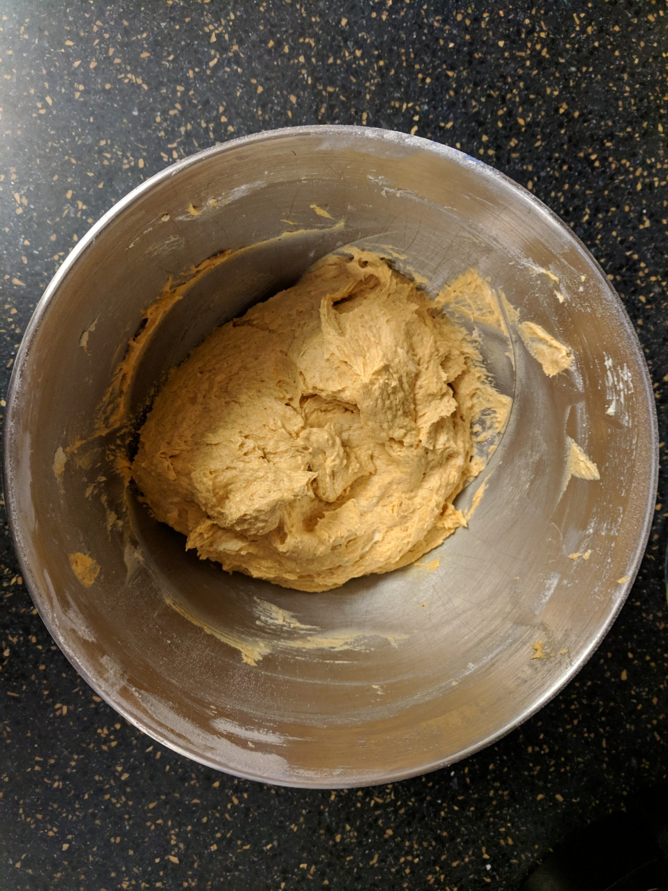
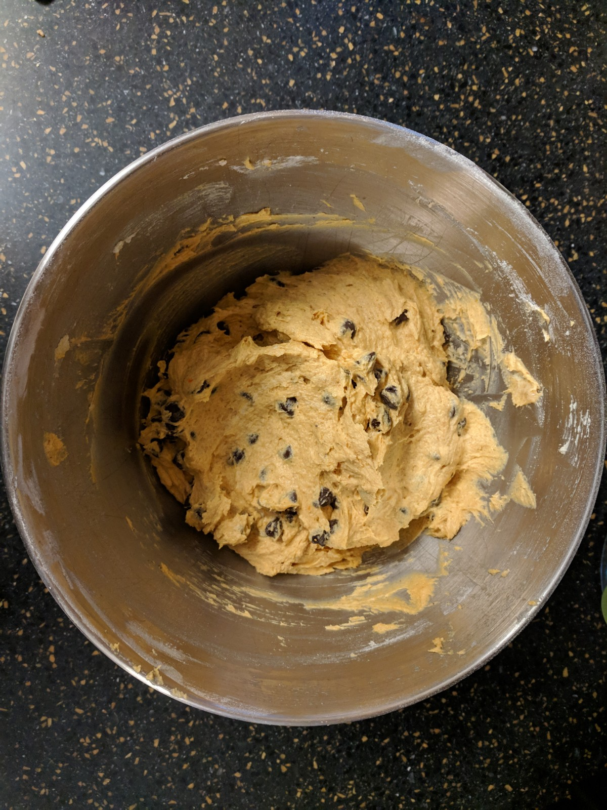

2019-02-12
This is a recipe that was passed down to my mum from my grandmother on my father’s side. It’s a family classic, and while it’s technically called “autumn loaf cake,” we just refer to it as “pumpkin bread.” I want to share this recipe with you because of its importance to my family — every time I visit my cousins’ houses, this is baked at some point during the visit, and we have it for breakfast. Of course, I also want to share it because it tastes good. It’s surprisingly good for breakfasts; just make sure to drink something with it, especially if it’s milk or some alternative.
This recipe would not be possible without the Columbian Exchange. Pumpkin, which is native to North America, would not have originally been available to Europeans for any purpose, including as food. The chocolate, too, is something that would have been exclusive to the New World in the time of Columbus. The pumpkin, however, is the main ingredient giving this bake its flavor. When Europeans began to explore the Americas, the pumpkin was one of the crops that — forgive the term — cropped up practically everywhere. It was mentioned many times, and was found to not only be edible, but in fact taste quite pleasant. Exportation of these large squash occurred from much of the North American continent, meaning that explorers from Europe must have met a large variety of native peoples during their exploration. In fact, much of what Europeans learned about how to prepare and eat pumpkins came from native traditions.
In modern times, of course, pumpkins are a bit different than in the 17th century, and they’re much more easily accessible. For example, the pumpkin used for this recipe was bought pre-prepared in a can.
You will need the following ingredients:
1 1/2 cup flour
1/2 tsp salt
1 tsp baking soda
1 tsp cinnamon
1/2 tsp nutmeg
1/4 tsp ginger
1/4 tsp cloves
1/2 cup sugar
1/2 cup butter
1 tsp vanilla
2 eggs
3/4 cup solid pack pumpkin
3/4 cup chocolate chips
Here, there is an extra stick of butter in the photo. Don’t put an extra stick of butter in your bake.
Before you begin, preheat the oven to 350°F. Preparation shouldn’t take long.
Here we go:
Sift the dry ingredients and set them aside.
Cream the butter and sugar in a large bowl until light and fluffy.
Add the vanilla and eggs. Beat well.
At low mixing speed, add the dry ingredients and the pumpkin, alternating, beginning and ending with the dry ingredients.

Stir in the chocolate chips.

Pour and spread the mixture in a greased 9x5x3 loaf pan.
Bake at 350°F for 50-60 minutes, until it springs back when lightly touched in the center.
A little overdone, but it still looks good.
Let it cool for 15 minutes before removing it from the pan and letting it cool completely.
Let it stand for at least 6 hours before slicing.
Enjoy!